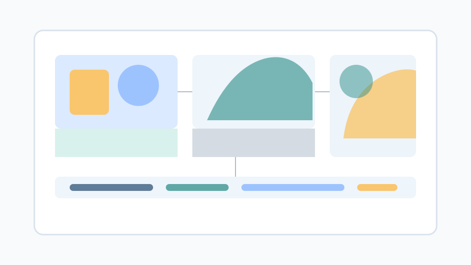

Learn Pixel Metrics
Start with IoU, Dice, pixel accuracy, and confusion matrices. These explain how segmentation quality is measured.
Free computer vision tutorials
A free academic platform for learning semantic, instance, panoptic, and self-supervised image segmentation.
Image segmentation is the task of partitioning an image into meaningful pixel-level regions. Instead of predicting only an image label or drawing a bounding box, segmentation asks a model to describe where each visual concept occurs.
Segmentation models produce spatial outputs. A model may assign a class to every pixel, separate each object instance, or create a unified map of things and stuff.

These tasks share the goal of pixel-level understanding, but they answer different questions.
| Task | Question Answered | Output | Typical Metrics |
|---|---|---|---|
| Semantic segmentation | What class does each pixel belong to? | One class label per pixel | Pixel accuracy, mIoU, Dice |
| Instance segmentation | Which object instance does each foreground pixel belong to? | One mask per object instance | Mask AP, IoU |
| Panoptic segmentation | How can every pixel be assigned both a semantic class and instance identity when needed? | Unified scene map with class and instance ids | Panoptic Quality |
Students can follow this order from fundamentals to modern research pipelines.
Start with IoU, Dice, pixel accuracy, and confusion matrices. These explain how segmentation quality is measured.
Move from FCN and U-Net to DeepLab and transformer encoders. Focus on dense prediction and multiscale context.
Study Mask R-CNN, YOLO-style segmentation, and mask AP to understand detection plus mask prediction.
Finish with panoptic segmentation, self-supervised representation learning, and foundation-model assisted annotation.
Each topic page is written as a concise tutorial with definitions, intuition, formulas, and reading guidance.
Pixel-wise classification, encoder-decoder architectures, multiscale context, and semantic metrics.
Open tutorialObject proposals, mask heads, real-time mask pipelines, and instance-level evaluation.
Open tutorialUnified scene understanding with things, stuff, and Panoptic Quality.
Open tutorialRepresentation learning, pseudo masks, and low-annotation segmentation workflows.
Open tutorialStart with these papers to understand how the field developed from fully convolutional networks to foundation models.
Popularized end-to-end dense prediction with convolutional networks.
Extended Faster R-CNN with a parallel mask branch for instance segmentation.
Unified semantic, instance, and panoptic segmentation through masked attention.
Open Segmentation Lab is designed for university students, early researchers, and instructors who need accessible computer vision material without a paywall. The first version keeps the platform lightweight, static, and focused on open academic learning.